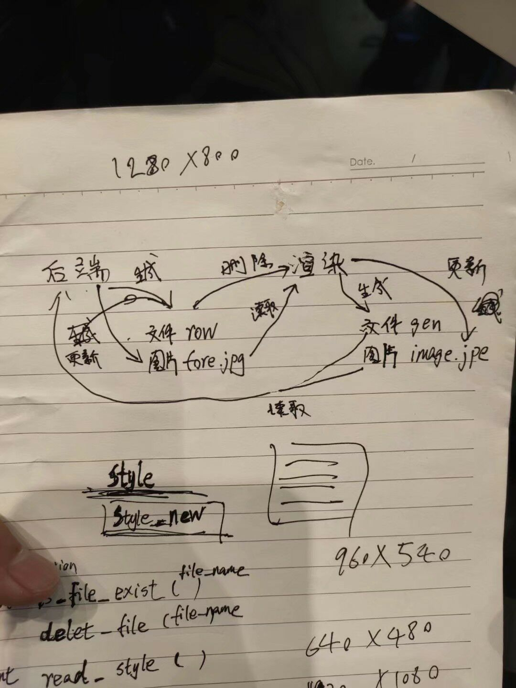

咦 ε=ε=ε=┏(゜ロ゜;)┛！今夜观日历，掐指一算，大学竟然已经过半。这两年大学生活给我带来的感受确实很刺激，感觉换了一个人生，其中有很多激动的时刻，很多难受的瞬间，更多的是平淡的生活。生活=百分之5的刺激+百分之95的平淡是有道理的，但是总觉得平淡的生活是抓不住的，真的就像手上的沙子，来不及细看就飘飘而过，平淡似乎等于了平庸，碌碌无为，饱食终日的混日子，所以打算细致总结自己的大学前半生，让今后的生活有意义
一、我眼中的大学
大学之道,在明明德,在亲民,在止于至善.-这是哪个子写的就先不管了，反正肯定是个♂哲学家吧。我一直觉得这句话很明显就没有包含技术，技能的要求，所以我觉得一个大学生所具备的绝不仅是技术。可能这句话确实对于现在的社会不是很贴切，我个人是觉得从这两年的生活来看，大学就是一个多样的平台，这个平台上有的人可以站在舞台中央展示自己，有的人也可以自己在墙角享受自己的小提琴。大学这个平台提供了非常多独一无二的资源，比如一个学会如何交友的平台，一个追求自己技术的平台，更残暴的说一个给你找女朋友得平台。总之我认为大学==平台，并且大学===平台，曾经刚入学的自己，仿佛一切都在模仿别人，模仿那些好学生，好学生不翘课，所以每节课乖乖坐好，好学生考前每次都刷三五套卷子背三五晚的概念，坏学生就是五花八门（形容大学生在期末周花五天复习八门功课），大一上的绩点所以还算不错。这样固然不是错的，但是我仅仅是觉得这只是利用了这个平台很小的一部分资源。但是我认为这样并不能成为大学生，比如大一曾经学的数字电路当初强记的概念，现在又剩下了多少。某位曹哲学家曾经说过，在大学你可以选择当两种人，基础非常扎实绩点非常高的大学霸，和绩点不高但是技术很强的大佬，如果你绩点非常低、技术又非常差，那么你在大学就是废物所以到了大一下绩点开始往下坠，大二的话一部分课免听一部分课没怎么上，但是确实自己想知道自己想学什么。大一学线性代数没用学校教材，自购了一本线性代数及其应用,仅仅是多了应用2个字，讲解的东西居然相差甚大，学校教程疯狂推导，然后讲解例题，然后讲解大量类似例题的题，但是这本书确实非常接地气，比如第一章的练习就是逆序数解答了高矮排列问题。所以从线代开始，后面的离散，数据结构均买了偏应用的书。目前大二而言，本学期的专业课增加，额但是个人觉得确实课蛮水的，大二基本上只上了英语课和体育课绩点都3.5了，也让自己对学校课程略显失望，唯一可惜的就是pa没有好好做，可能因为自己没有把握住自己的情绪，现在想想因为自己的情绪而对某个想学的东西拒之门外真的太愚蠢了。不过依然如此，在大学，有了自己的追求，绩点一切随缘，不必刻意刷题提高绩点，但是会把握能提高绩点的机会。
二、“问题不大”-永远保持一个积极向上的心态
大学期间确实接触了形形色色的同学，有因为学习深夜痛哭深夜打电话求安慰的，有因为专业问题痛心疾首以泪洗面的朋友，也有因为社交而深夜在宿舍阳台思考人生的室友，当然也有失去英语期末考试资格，毛概考试睡过头但是一句话问题不大结尾的某位曹哲学家。我仿佛觉得自己的大学并未感受到什么挫折打击，或许有但是以及忘记了吧2333。人类的组成应该来说是差不多的，都是有七情六欲的，每个人都会有负面正面的心态，但是就是看你能展示出哪一面。曾经我也自信过自己的正能量值甚至能溢出，能安慰痛苦的，能和在阳台上的神仙触膝长谈的。但是有那么一周，身边突然多了很多悲观的同学，安慰她们的同时慢慢的那一周似乎自己也变得多愁善感，所以我开始坚信没有人是能没有一点负面情绪的，全部在于自己的控制。想想其实问题很简单，学习压力大的菜鸡自然有菜鸡的活法，专业不合适的，学自己想学的一部分就行了，社交障碍的想想怎么迈出去就完事了。问题肯定是有解决的时候，你解决不来还有别人，更别说轻生的神仙们。当你觉得很难得时候，说一句问题不大，可能真问题不大。
ps:有个小故事，今年六月份，王国彬学长带小菜鸡前往华科参加hackthon，现场组队，幸运自己被一个华科的学长带，这个学长自然也是写代码的，但是这个学长只有左手是能活动的！！！，当然我全程没询问任何关于这个的问题，但是这个学长给我留下了深深的印象，仅仅使用左手，先不说写汉字考语文如何写完，就算考入大学，多少人能一只手坚持学计算机，并且这位学长此刻正在RT-Thread公司实习，最深的印象就是这个学长全称是开心的，无论是写代码，还是帮我左手手手绘设计图，讲解进程间通信，能感受到嘴角的微笑是发自内心的，所以《当幸福来敲门》这样的故事不仅仅是在电影桥段中，真实也是存在的，当你接触到，你会震惊的！留下了比赛中的左手写的手稿

三、学长学弟以及同学的交友之道
大学这个平台我认为收获最大的自然是朋友圈，朋友圈=机会，当然并不是利用，而是能够互相援助。我认为自己大学最幸运的就是认识的人都很nice,大一开始非常幸运加入了odg组织，认识了阿汤哥赵神陆老板一些优秀的学长，之后开发接触的pm学长，再之后的打信安比赛接触的更多优秀的人。然后是比赛中接触的比如前面讲的华科学长。对于大学师兄弟我认为应该的状态：和任何人相处时都能从容淡定；遇到厉害的人可以谦恭地学习，不卑不亢，遇到不如自己的人，也能够平心静气地讲解，不颐指气使。但是我认为最重要的一点是你一定要感谢任何曾经帮助过你，曾经传授过你知识，曾经给你提供过机会，曾经帮你解决过问题的任何人，尊师重道我认识更多在于非义务上的帮助，你必须心怀感激，为人本质。回想两年，听过不少学长们培训，学长们的远程帮助，还有阿汤哥手把手的教写代码，也是需要铭记在心的。除了感激就是回到第二点，保持一个积极向上的心态对待其他人，在一个人难受的时候，你上去落井下石，这样的人天理难容。记得大二那年开学，大一在阳台上思考人生的神仙走过来说:”刘志赞啊，真的非常感谢那几个晚上你说的话，不然我真的撑不下去了”。就算是被认为是中央空调，又有何不可，你能收获到真挚的友谊，敞开心扉的圈子，甚至是单纯的恋爱，有谁不想在回宿舍路上遇见的认识的同学都能寒暄寒暄“呦，赞哥回来了”，而不是个个低头刷手机。
四、我眼中的大学老师
大学两年，接触的比较深刻的大概来说有3个，体现出各自的为师的特点
一、薛某A老师:A老师是大一时候的软件工程导论的老师，接触的原因是是大一寒假的一个项目，这个项目是大学自已第一次做的项目，也是比较难受的一个项目，参与的成员几乎都是混一个项目实习证明的大三大四学长们，在参与一周后发现就自己的进度超过了他们之和，所以毅然离开了项目组，A老师的特点在于无法尝试新的东西过于保守刻板，比如只允许使用ecplice而不能使用idea开发，只能通过代码物理拷贝，而不参用git项目管理，另外给的学生待遇一个月兼职勉勉强强四位数，其实对于大学大部分老师的项目来说，兼职做项目这个待遇也是差不多吧。
二、周某老师：虽然和周老师发生的一些事情不是很愉快，但是这个老师确实是我很钦佩的。和周老师接触是因为他的一门课是我大学期间目前最认真的一门课，从未翘课，并且每堂课全程智商在线跟上节奏，他的课分理论课和实践课，理论课的言行确实有一种当代大师的风范，我个人很钦佩，所以能上好一堂完美的课，也是一个优秀的老师的体现，不愉快的是他的实践课是要求写一个网站，因为接触过，并且非常感兴趣，所以花了相对来说比较多的时间整课设，并且老早就到办公室申请答辩评优也受到了他的赞赏，但是到了助教打分时，给了我70分理由是“物极必反”-太过优秀严谨的项目和文档，透露出课设的真实性，我被怀疑是抄的，wtf我都对于这个学长我也是佛了，我都参与了评优答辩说明了整个项目框架结构甚至是所有技术，就算未答辩他又有何证据认为是抄的而直接暗箱操作，之后自己发了封邮件给老师，最后老师的决定是承认是我自己写的，但是分数不能改，唯一的解决方案是我来年重修，他给我打高分。我送出一句话：我有自己的追求而不是绩点，结束了这场闹剧。所以一个优秀的老师还需要具备对助教人才的选区，以及相关制度的完善或者说是否站在学生的角度思考过问题
三、刘亮老师：这里为什么能直接写名字呢，因为我想吹爆亮哥，亮哥年轻有干劲，首先我认为老师在项目的活跃性和他自己对于项目的贡献会直接决定整个项目的发展进程，确实能感觉得到，如果我成为一个老师，也想成为这样得，标准大概是这么几点；
1、合理处理师生关系:项目开会中保持严谨实事求是得态度，但是开会结束开车请项目组撸串出烧烤喝酒，甚至直接买入食材在办公室整饭吃。甚至是多我们学生说“你们如果有驾照了，我的车给你们开开”
2、价值观:我认为能够温饱甚至小康确实没必要那么在意钱，在和亮哥的项目开发中，似乎能感觉得到他关心得更多是项目得技术水平，对于待遇可以说是项目经费与学生AA的，这点是很现实的，多少学生参与传说中的百万级项目并且提供了不可小觑的输出，最后拿了几千的工资（某王真实故事）
3、胸怀: 亮哥在吃饭的时候问的一个问题是，你身边有没有家里比较贫穷的学生，他就是想在自己小康解决之后想资助其他学生能够在大学多学一点技术东西，而不是寒暑假发传单端盘子（此处并没有任何看不起底层劳动者的意思，只是认为合适的年龄应该做更有价值的事）。为师者能达到这等胸襟吹爆
4、传道的艺术：当然作为一个老师也还是需要学生管理，知识能力传授的，亮哥在功课上确实无门槛，比如他的研究生项目组讨论技术问题，对我们都是欢迎旁听的，亮哥的操作系统不少其他专同学跨专业选他的课以及能体现传道的魅力。
五、一个组织应该具备什么
大学两年前后，先后加入或者成立了一些组织，战队，部门什么的，总的来说就是一个team,一个team的管理人以及管理的制度会直接影响未来的发展。
先说说大一入学主要是odg和校科协的活动部，然后大二成立了一个假冒伪劣的odg（8086）,然后是信息安全战队，先后当了网络应用创新区部长，微软俱乐部技术主席。odg虽然现在时间凉得透顶，但是我认为是我大学期间或者人生极为重要的一个team，学会了如何管理一个team，所以总结来说我认为odg成功有以下几点
1、实干真知：既然我们是一个以技术为核心的team，所以缺少实货是绝对要凉的，odg在培训的时候全程是以一个能让萌新接受的，但是传授真知的状态，吹爆阿汤哥赵神
2、无阶级观念：虽然说大学是半个社会，但是毕竟不是整个，一个社团组织并不是严格按照每周要求的某一天大家恭恭敬敬坐在一个会议室，部长坐讲台开始讲事情地方
3、管理人员有责任感：责任感的体现就是说到做到，反面就是咕咕咕，作为一个team的leader，你的行为作风很容易会成为别人的标杆，所以leader需要有强烈的责任感（再次吹爆阿汤哥e’e
4、部员有归属感：第一次听到归属感一词来自于一个大一的优秀学弟，这个学弟在别的部门被邀请当部长都拒绝了，因为他想留任8086，因为他认为8086对他有归属感，当时他可能不知道8086其实不打算往下延续了，但是仅仅是这么一句话自己大二一年的努力没有白费，但是要做到这一点确实是很难的，能让部员有归属感，就回到了交友之道，比如说无培训时候阿汤哥能自掏腰包买零食聊天茶话会，如何能让部员们个个能在部门内打开心扉说出自己内心的真实感受可以认定为有归属感的体现
六、大学恋爱价值观
我猜肯定有不少单身狗直接跳过了前面来这里看的，这里没啥好看的，看了您也找不到女朋友(‾◡◝)
严肃脸：某曹哲学家♂曾经对我说，人类本身就是“花心”的，没有只喜欢哪一个人，只有喜欢哪一类人
确实而言，就男孩子而言，大多数男孩子对于漂亮的定义不一样，但是对于自己觉得漂亮的女孩子一定会想去追求吧。曾经一个哲学家说过（这回是真的哲学家）
一个人在世界上合适跟他在一起的有两万个人，你遇见这两万个人里的任何一个，也许都会发疯一样爱上她。
可惜很多人一辈子都未必会碰见一个那样的人，也有的人运气更差，一下子碰见不止一个。先不说这个运气差的幸运儿，这个太复杂了，但是可以知道的是，在尚未接触之前，人类是没有非要和某个人在一起的依据。因为在爱之前，我坚信一定会有喜欢的这个过程，必不可少。爱一个人之后你才可以说这辈子没有她你不能活，那么这是如何过渡的呢，我认为喜欢可以是一个瞬间形成的，但是爱是需要时间的，日久生情不是没有道理的，所以我认为在你确定是不是喜欢一个女孩子的时候，你应该绅士大方可以邀请吃饭看电影，其实我个人认为单独吃饭看电影并不能说明什么，所以也希望大家能够提高自己的素养，看到某两个人走在一起就认为怎么怎么的，只有在几次真实交往中才能确定是不是真的合适在一起，如果你们相处一桌，互相紧张，互相压抑自己，只能让气氛更加僵硬，如果你们能越谈越开心，并且无太多拘束的开始慢慢说出自己的真实感受，那么你们已经成功了一半。如果你只是喜欢一个女孩子的时候，请不要做出这个阶段你不该做出的事说出的话，如果只是短暂的见几次面你就牵扯到爱不爱的，除非真的是一见钟情的爱（反正我认为是不存在的），开始送戒指这样的蠢事，因为这样可以认为你只是为了把你当前遇到的女孩用于占位来填充你自己内心的空虚，只会让你变得更恶心，虽然自己也曾经跟一些女孩子单独吃饭看电影，但是在过程中自己发现她确实不合适的时候，自己能够全身而退，全程始终是以一个同学或者朋友的角度。 当然肯定有很多男孩子由于种种原因不能说出，请你耐心等待，爱情是需要时间的，如果你们已经相处了很久，但是她在当前这个时间段在认真学习或者有不能分心的追求，你不能也不可以打扰她。你可以把喜欢放在心中，等她读书结束再询问感情的问题，切记
如果你爱的人正在认真读书，请不要让她分心
如果你不能肩负男朋友的责任，请不要妨碍她找男朋友
当你不能给她足够的生活，请不要打扰她
如果你不能为她披上嫁衣，就不要脱掉她的内衣当然，人的喜欢的标准必定不是一尘不变的，可能随着自己的年龄，心态的变化也在变，那么哪个选择才是你认为对的呢,张爱玲的话：
也许每一个男子全都有过这样的两个女人，至少两个。娶了红玫瑰，久而久之，红的变了墙上的一抹蚊子血，白的还是床前明月光；娶了白玫瑰，白的便是衣服上沾的一粒饭黏子，红的却是心口上一颗朱砂痣。的确很真实，如果你是先遇到红玫瑰而后遇到白玫瑰那么恭喜你，你定会和白玫瑰走下去。如果你是先遇到白玫瑰，而后遇到红玫瑰，那么为您惋惜，当你回头看白玫瑰的时候可能已经物是人非，当然最好的解决是你的红玫瑰能够变成你的白玫瑰，如果您不知道什么是红玫瑰白玫瑰请自由谷歌百度或者看看张爱玲的书提高情商